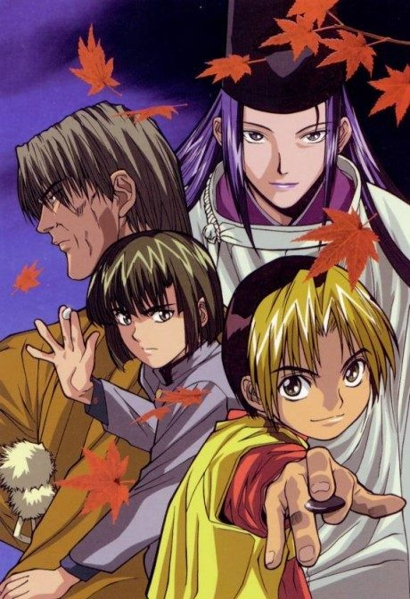
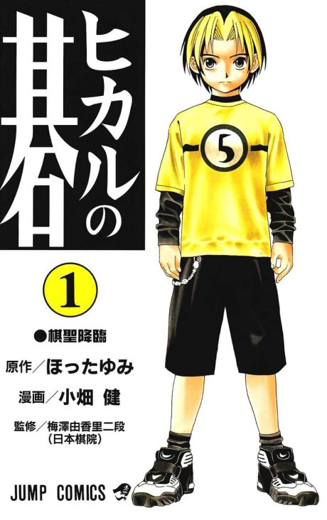

Hikaru no Go
ヒカルの碁
Hikaru finds an old Go board haunted by the ghost of a Go master, who wants to play again, and slowly gets drawn into the game himself.
We haven't found where the anime ends in the manga yet.
7.8AniList score
—Animeter, no votes yet
75episodes
Rate it or report where you stopped
Filler
2 of 75 episodes are filler and 2 mix canon with filler.
Episodes75
Canon71
Filler2
Mixed2
123456789101112131415161718192021222324252627282930313233343536373839404142434445464748495051525354555657585960616263646566676869707172737475
CanonMixedFillerRecap
Skip list (filler episodes)
64, 66Sources: Anime Filler List